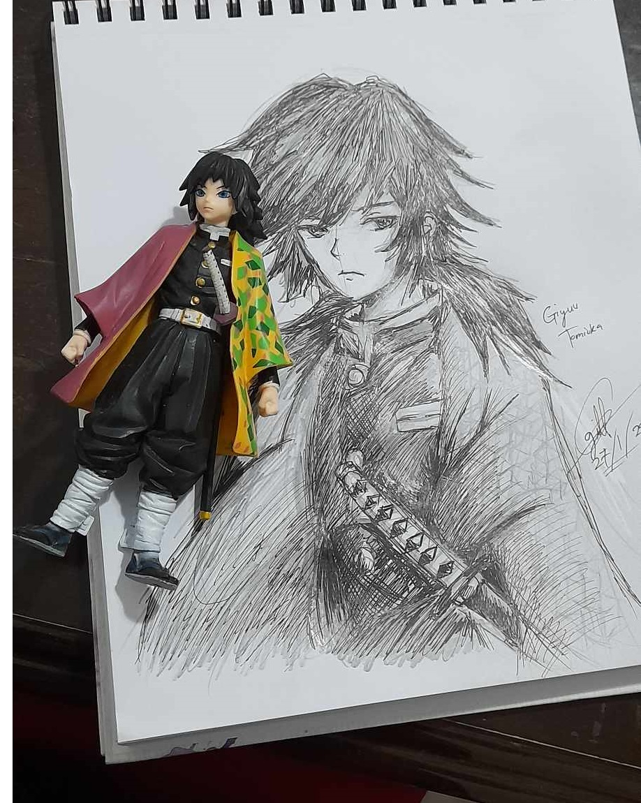

Hi, Gillian Here.
Welcome to my art gallery and my personal website for art related basis.
ABOUT ME
As a student, I also worked as a professional artist. I started drawing at the very young age to persue my passion in making different project through art as I allow myself. So here is my interactive website of my artworks in this portfolio website.
1. The Mandalorian

This iconic art was made since 2021. And I had an idea of making this way iconically. I get the inspirational from pinterest and google to make them more minimal.
2. Game Of Thrones X Chess

Another Iconic artworks with Game of thrones collaboration with my character as a house lannister in Game of Thrones series.
3. Erwin Smith - Attack On Titan

An Iconic Erwin Smith and his younger self as a commander of Survey corps.
The Bonus sketches.
Basically the bonus sketches is more on manual drawings. They're focused more on ink sketches of any character's drawings.
Iskandar - Fate series

Iskandar or The rider from the Fate series. He's one of my favorite chatacter eversince when I started watching the Fate series anime.
Sub Zero - Mortal Kombat series

Sub-zero from Mortal Kombat series is also known for Bi han or Kuai Lliang. Subzero is also Hanzo aka Scorpion's brother.
Giyuu - Demon Slayer

Another Iconic art from the Demon Slayer series. Which is basically Giyuu. He is one of my favorite in the Demon Slayer series and he is also known as the strongest hashira in the series.